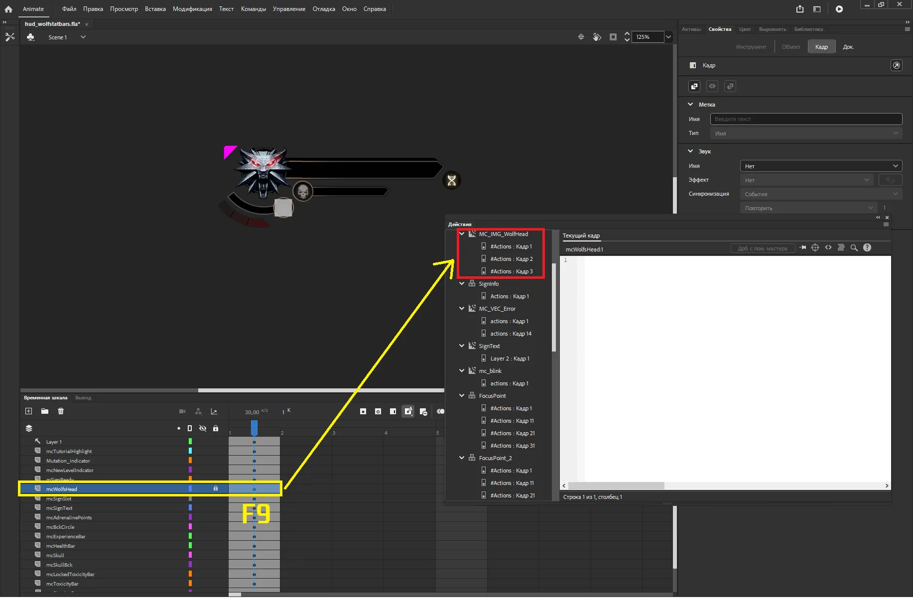
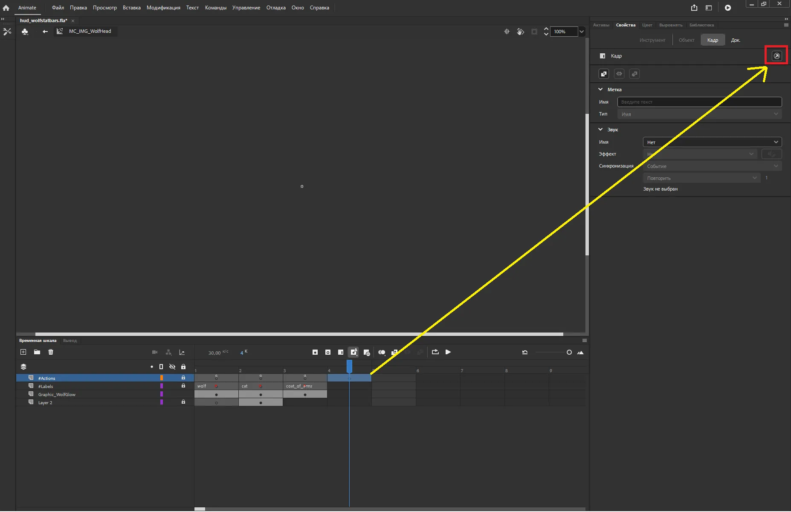
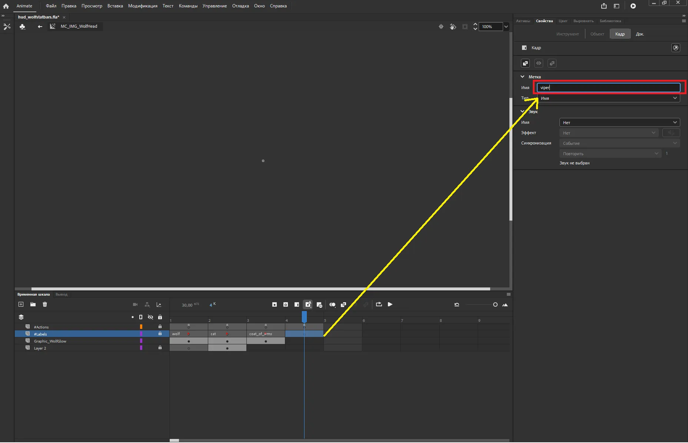
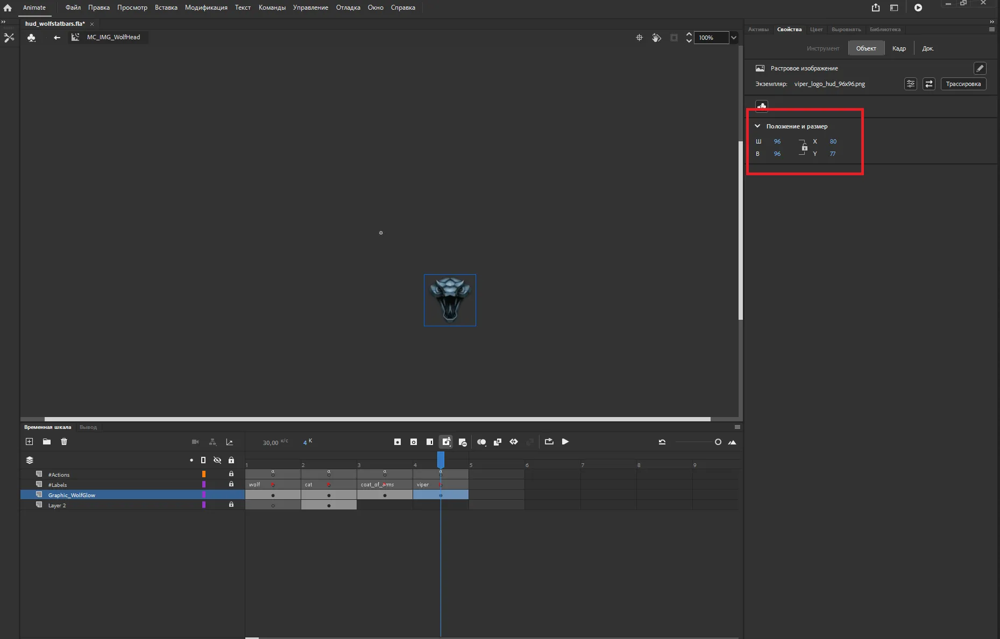
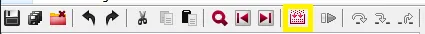
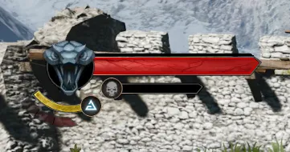

Как создать свой медальон в hud¶
В игре можно менять медальоны в HUD, это происходит при смене игрока на Цири и во время игры за Витольда в DLC.
В этом гайде мы пошагово добавим свою иконку медальона и заменим её.
Немного теории:
Интерфейс в игре сделан на Adobe Flash. Элементы UI это в основном movie clip компоненты.
У каждого может быть покадровая анимация и именно это используется для переключения различных состояний интерфейса. Каждый кадр анимации — это фактически отдельный "слой", который можно включать и выключать.
Через этот гайд мы разберемся, как устроена система переключения на примере. Это поможет не только заменить иконку медальона, но и научиться переключать любые части UI и вы глубже поймёте, как устроен UI.
Что понадобится::
- Adobe Animate - для редактирования .fla и сборки .swf (Где достать софт Adobe - догадаетесь сами)
- Visual Studio Code с плагином ActionScript & MXML (опционально - для удобства работы с Action Script)
Шаг 0. Копируем нужные файлы¶
Чтобы удобно работать с интерфейсом, зачекаутите всю директорию gui_new в свой workspace:
- Перейдите в
папка_redkit\r4data\gameplayи скопируйте оттуда папку gui_new - Вставьте ее в ваш workspace в папку gameplay
- Чтобы редактор не думал, что вы отредактировали весь UI, в папке
workspace\gui_new\swfи всех подпапках удалите все файлы с расширением.redswf
Шаг 1. Добавляем иконку в fla¶
- Откройте файл
gui_new\fla\witcher3\hud\hud_wolfstatbars.flaв Adobe Animate - На временной шкале найдите
mcWolfsHead - Выделите первый кадр и нажите F9
- Откроется меню действий, найдите MC_IMG_WolfHead и кликните по любому кадру

Вас перебросит внутрь компонента. Там будет 4 слоя и по 3 кадра для каждого медальона.
На слое #Actions:
- ПКМ → Добавить пустой ключевой кадр
- В свойствах (если свойств не видно, зайдите в Окно и ткните на Свойства) нажмите на стрелочку, это откроет текстовый редактор
- В него вставьте одну строку:

ActionScript
На слое #Labels:
- ПКМ → Добавить пустой ключевой кадр
- В его свойствах задайте имя, это идентификатор который нужен Action Script для выбора кадра. 
На слое Graphic_WolfGlow:
- ПКМ → Добавить пустой ключевой кадр
- Перетащите свою иконку из проводника прямо на сцену
- Разместите ее и масштабируйте как нужно мышкой или в свойствах на вкладке объект 
Сохраняем .fla Ctrl+S, пока сворачиваем Animate и идем дальше.
Шаг 2. Пишем функцию для замены медальона¶
Нам нужна функция в Action Script, которая будет менять медальон.
- Инициализируйте новый проект vscode в директории
gui_new\actionscript. - Перейдите в файл
red\game\witcher3\hud\modules\HudModuleWolfHead.as - Добавьте новую публичную функцию, например я добавлю такую:
| ActionScript | |
|---|---|
А теперь давайте разберемся, что тут происходит
Мы вызываем SetMedalionGraphic, которая делает вот что:
| ActionScript | |
|---|---|
Эта функция находится в red\game\witcher3\hud\modules\wolfHead\WolfMedallion.as
Это хороший референс, как устроено переключение. По этому примеру можно написать функцию переключения других частей.
Сохраняем файл и идем дальше.
Шаг 3. Компилируем redswf¶
- Вернитесь в Adobe Animate.
-
Файл → Опубликовать.
Важно!
Если файл swf read-only (например, из-за perforce) - Animate выдаст ошибку. Нужно открыть на редактирование файл
gui_new\swf\hud\hud_wolfstatbars.swf -
Перейдите в REDkit в папку
gameplay\gui_new\swf\hud - ПКМ → Import → Flash SWF
- Укажите путь к вышеуказанному SWF, подтвердите замену и checkout
Шаг 4. Подключаем функцию в witcher script¶
- Перейдите в Tools → Script Studio
- Создайте новый файл скрипта, где вам удобно и вставьте отредактировав то, что отмечено комментариями:
Шаг 5. Тестовая функция¶
Cоздадим тестовую функцию для смены медальона, заодно на ее примере будет понятно, как работать с этим:

Никаких ошибок в консоли не должно быть, последняя строка: Script compilation finished successfully.
Готово!
Выполните в консоли команду и передайте в нее true ( в моем случае test_set_letho_hud(true) ), убедитесь, что медальон заменился.

Автор: leviofanh
Документация поддерживается участниками сообщества REDkit RU